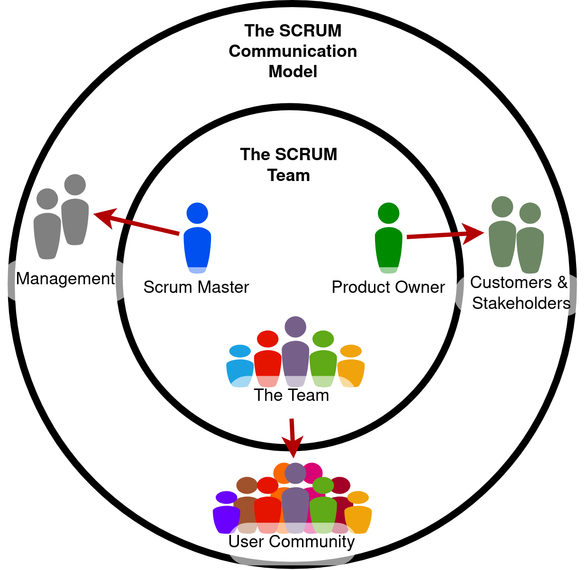
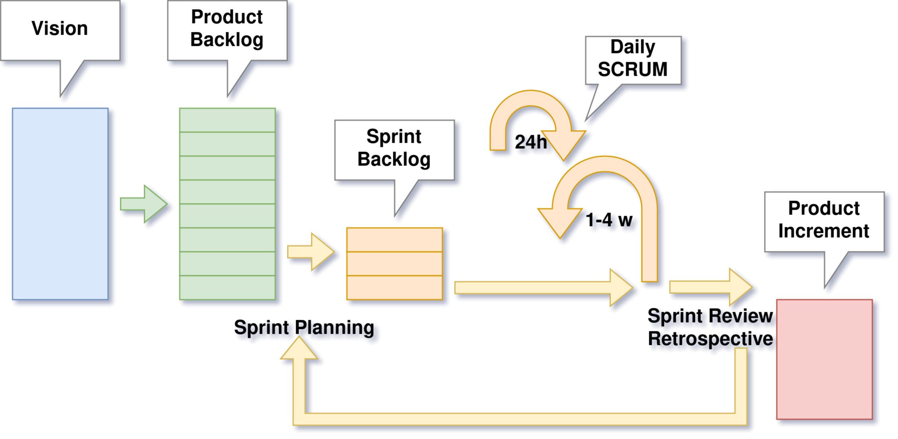
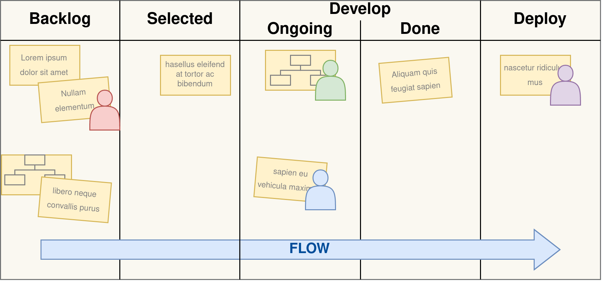

Waterfall

- Sequential design process
- Next stage can be started after finishing the previous
- After finishing a step, cannot go back to previous
Waterfall: pros
- Customer can have clear expectation about the final product
- Employee turnover does not influence project due to strong documentation
- Simple, easy to use model
Waterfall: cons
- Customer can have clear expectation about the final product
- Employee turnover does not influence project due to strong documentation
- Simple, easy to use model
Waterfall Vs. Agile
- Waterfall Vs. Agile: Must Know Differences
- A többi fejezet is ajánlott
- Waterfall vs. Agile: Which is the Right Development Methodology for Your Project?
V-Model

Complex Project

- Complex projects are where requirements and technology are not agreed.
- Flexibility and frequent feedback loops are needed here.
The Agile Manifesto
We are uncovering better ways of developing software by doing it and helping others do it. Through this work we have come to value:
- Individuals and interactions over processes and tools
- Working software over comprehensive documentation
- Customer collaboration over contract negotiation
- Responding to change over following a plan
That is, while there is value in the items on the right, we value the items on the left more.
- The following 12 Principles are based on the Agile Manifesto.
- Külön érdekes a szoftverfejlesztési metodológiákat metrótérképszerűen összefoglaló ábra
Agile Principles
- Frequent delivery
- Test early, test often
- Small, incremental releases
- Development team makes their own decisions
- Direct communication between customer and development team
Best Practices for Agile
- Test-Driven Development (TDD)
- Regular refactoring
- Continuous integration
- Simple design
- Pair programming
SCRUM
A framework within which people can address complex adaptive problems, while productively and creatively delivering products of the highest possible value.
- Not a process or technique, rather a framework
- Based on empirical process theory
- Empiricism assumes that knowledge comes from experience
- Iterative, incremental approach
- Consists of
- Scrum Team/Roles
- Events
- Artifacts
- Rules
Scrum Team & Roles
- Self-organizing
- Cross-functional
- Maximizes opportunities for feedback
- Roles:
- Product Owner (PO)
- Development Team
- Scrum Master
Product Owner
- Responsible for optimizing the value of the work the Development Team does
- Clarifies product backlog items
- Product backlog items can only be prioritized by PO
- Decisions made by PO is respected by everyone in the entire organization
Development Team
- Self-organizing team – makes its own decisions how to turn Product Backlog into potentially releasable functionalities
- Cross-functional team – team has all skills needed turn Product Backlog into potentially releasable functionalities
- No titles inside team
- No subteams inside team
- Size can be between 3 and 9
Cross-functional team

Akkor tud egy csapat „cross-functional” lenni, ha minden tagja kellőképpen érti a csapat feladatát, így a tagok képesek egymást helyettesíteni. A fenti ábra a csapattagok tudását szemlélteti. Az első esetben csupán elenyésző általános tudással rendelkező emberekről van szó, akik egy nagyon szűk területet ismernek. A cross-functional team esetében is megvan az egyes tagok specifikus tudása ám az kevésbé nyúlik túl a csapat általános ismeretein és kevésbé specifikusabb is.
Scrum Master
- Responsible for Scrum to be understood in scrum team
- Facilitates scrum events
- Removes impediments from development team
- Coaches development team for self-organization
- Coaches organization in Scrum adaptation
- Not the „boss” of development team
- Servant leader of the team
- Can be one team member or common Scrum Master for several teams
Scrum Master - Funny movie about The Power of Scrum
Scrum Events
- Time boxed events
- there is a maximal time allowed to keep
- Regular meetings
- minimizes the need for other not defined meetings
Sprint
- Time-boxed for one month or less
- During the sprint a potentially releasable product increment shall be created
- Consists of
- Sprint Planning
- Daily Scrums (Standup)
- Development work
- Sprint Review
- Sprint Retrospective
- Each Sprint has a definition what has to be done
- During Sprint no change can be made that influences the Sprint Goal
- Can be terminated when Sprint Goal became obsolete
Sprint Planning
- The work that should be done in Sprint is planned in Sprint Planning
- Eight hours for a one-month Sprint, for shorter Sprint it is less
- Answers for two questions:
- What will be delivered for the next Sprint?
- How it will be done?
- Product Backlog is used as an input, Sprint Backlog (SB) is filled with items from Product Backlog (PB)
- The number of selected items has to be decided only by development team
- Product Owner helps to clarify Product Backlog items
- Scrum Master facilitates the meeting when needed
Daily Scrum
- Time-boxed to 15 minutes
- Main goal is to synchronize activities between team members
- Kept each day at the same time and same place to reduce complexity
- Every team member participates and answers three questions:
- What was done by himself/herself by last Daily Scrum?
- What will be done by himself/herself till next Daily Scrum?
- Are there any impediments that prevent the work?
- Scrum Master does not need to participate always, but
- Ensures that all team members take part
- Teaches development team to keep the time-box
Sprint Review
- Kept at the end of the sprint
- Time-boxed to four hour for one month sprint
- Scrum Team and stakeholders attend
- PO explains the PB items, that are „Done” or not „Done” to stakeholders
- Development Team demonstrates the work and answers questions
- Scrum Team gather feedback from stakeholders
- All participants collaborates on what to do next
Sprint Retrospective

- For the Scrum Team to inspect and improve itself
- Three hour time-box after sprint review for one-month Sprint
- Plan shall be created for implementing improvements of the way of working
Sprint Artifacts: Product Backlog
- Ordered list of items needed for the product
- Dynamically evolves
- Property of Product Owner
- PO is responsible for its content and prioritization
Sprint Artifacts: Sprint Backlog
- Selected PB items for a certain Sprint in Sprint Planning
- Development Team is the owner
- Estimates are made by Development Team
Sprint Artifacts: Product Increment
- Sum of all PB items completed
- Has to meet the Definition of "Done"
- A new increment is delivered after each Sprint
Burndown Chart
- Expresses the remaining effort for a time period
- X axis: time left in the Sprint
- Y axis: remaining effort for the Sprint measured in story points
- Story points measures how "difficult" a user story is
- Story points are estimated by Development Team
AgileMe - Sprint Burndown Chart
Artifact Transparency: Definition of Done
- Checklist of activities needed for a product increment
- List of activities such coding, unit testing, documentation, integration test, etc.
- Has to be understood and followed by all team members
Scaling Scrum: Scrum of Scrums
- Each Scrum Team delegates an "ambassador" who attends the Scrum of Scrums meeting
- Ambassadors coordinate the work of multiple Scrum Teams
- Meetings are not as frequent as Daily Scrum
- Further reading
Kanban
- Pull system
- Eliminate waste
- Decrease cycle time
- Should be applied to current processes
- Rules:
- Visualize Workflow
- Limit Work in Process
- Measure and Improve Flow
Kanban cont.
- Tasks move left to right
- Choose the rightest top task to work with
- to finish it as soon as possible
- within a column, the task at the top has the highest priority
- task may contain
- assignee
- effort
- etc.
- Further reading
Scrum vs. Kanban
| SCRUM | Kanban | |
|---|---|---|
| Cadence | Regular fixed length sprints | Continuous flow |
| Release methodology | At the end of each sprint if approved by the product owner | Continuous delivery or at the team's discretion |
| Roles | Product owner, scrum master, development team | No existing roles. Some teams enlist the help of an agile coach. |
| Change philosophy | Teams should strive to not make changes to the sprint forecast during the sprint. Doing so compromises learnings around estimation. | Change can happen at any time |
Scrumban
Further reading about SCRUM
- Team Roles
- Product Backlog
- Release Backlog
- Estimations
- Sprints
- Burndowns
- Expectation Charts
- Daily Standups
- Retrospectives
Quiz
--- shuffleQuestions: true shuffleAnswers: true --- ### Scrum does not have a role called "project manager". 1. [x] True 1. [ ] False ### Which statement best describes a Product Owner's responsibility? 1. [x] Optimizing the value of the work the Development Team does. 1. [ ] Directing the Development Team. 1. [ ] Managing the project and ensuring that the work meets the commitments to the stakeholders. 1. [ ] Keeping stakeholders at bay. ### The Development Team should have all the skills needed to? 1. [ ] Complete the project as estimated when the date and cost are committed to the Product Owner. 1. [ ] Do all of the development work, except for specialized testing that requires additional tools and environments. 1. [x] Turn the Product Backlog items it selects into an increment of potentially releasable product functionality. ### What are the two primary ways a Scrum Master keeps a Development Team working at its highest level of productivity? - [x] By facilitating Development Team decisions. - [x] By removing impediments that hinder the Development Team. - [ ] By starting and ending the meetings at the proper time. - [ ] By keeping high value features high in the Product Backlog. ### What is the main reason for the Scrum Master to be at the Daily Scrum? 1. [ ] To make sure every team member answers the three questions. 1. [x] He or she does not have to be there; he or she only has to ensure the Development Team has a Daily Scrum. 1. [ ] To write down any changes to the Sprint Backlog, including adding new items, and tracking progress on the burn-down. 1. [ ] To gather status and progress information to report to management. ### The purpose of a Sprint is to produce a done increment of working product. 1. [x] True 1. [ ] False ### The length of a Sprint should be: 1. [ ] Short enough to keep the business risk acceptable to the Product Owner. 1. [ ] Short enough to be able to synchronize the development work with other business events. 1. [ ] No more than one calendar month. 1. [x] All of these answers are correct. ### The time-box for a Daily Scrum is? 1. [ ] The same time of day every day. 1. [ ] Two minutes per person. 1. [ ] 4 hours. 1. [x] 15 minutes. 1. [ ] 15 minutes for a 4 week sprint. For shorter Sprints it is usually shorter. ### Who is required to attend the Daily Scrum? 1. [x] The Development Team. 1. [ ] The Scrum team. 1. [ ] The Development Team and Scrum Master. 1. [ ] The Development Team and Product Owner. 1. [ ] The Scrum Master and Product Owner. ### Which statement best describes Scrum? 1. [ ] A complete methodology that defines how to develop software. 1. [ ] A cookbook that defines best practices for software development. 1. [x] A framework within which complex products in complex environments are developed. 1. [ ] A defined and predictive process that conforms to the principles of Scientific Management. ### Which of the below are roles on a Scrum Team? - [x] Development Team - [ ] Users - [ ] Customers - [x] Product Owner - [x] Scrum Master ### The Product Backlog is ordered by: 1. [ ] Size, where small items are at the top and large items are at the bottom. 1. [ ] Risk, where safer items are at the top, and riskier items are at the bottom 1. [ ] Least valuable items at the top to most valuable at the bottom. 1. [ ] Items are randomly arranged. 1. [x] Whatever is deemed most appropriate by the Product Owner. ### When might a Sprint be abnormally terminated? 1. [ ] When it becomes clear that not everything will be finished by the end of the Sprint. 1. [ ] When the Development Team feels that the work is too hard. 1. [ ] When the sales department has an important new opportunity. 1. [x] When the Sprint Goal becomes obsolete. ### Who has the final say on the order of the Product Backlog? 1. [ ] The Stakeholders 1. [ ] The Development Team 1. [ ] The Scrum Master 1. [x] The Product Owner 1. [ ] The CEO ### The CEO asks the Development Team to add a "very important" item to a Sprint that is in progress. What should the Development Team do? 1. [ ] Add the item to the current Sprint without any adjustments. 1. [ ] Add the item to the current Sprint and drop an item of equal size. 1. [ ] Add the item to the next Sprint. 1. [x] Inform the Product Owner so he/she can work with the CEO.